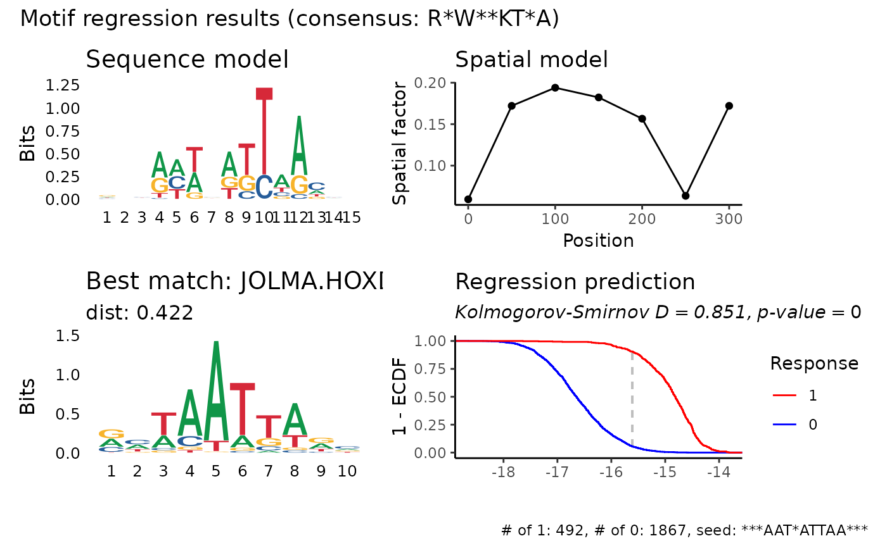

Run a 2-phase PWM regression
regress_pwm.two_phase.RdThe first phase of the optimization would be performed with a sampled dataset of size two_phase_sample_frac where different candidates of kmers would be regressed in order to find the best seed. Thenm the optimization would be performed on the full dataset while initializing the motif from the sampled dataset. You can also give explicit indices of the sequences to use in the first phase using first_phase_idxs.
Usage
regress_pwm.two_phase(
sequences,
response,
motif_length = 15,
score_metric = "r2",
bidirect = TRUE,
spat_min = 0,
spat_max = NULL,
spat_bin = 50,
improve_epsilon = 0.0001,
min_nuc_prob = 0.001,
unif_prior = 0.05,
is_train = NULL,
include_response = TRUE,
seed = 60427,
verbose = FALSE,
kmer_length = 6:8,
min_gap = 0,
max_gap = 1,
min_kmer_cor = 0.1,
consensus_single_thresh = 0.6,
consensus_double_thresh = 0.85,
two_phase_sample_frac = 0.1,
first_phase_idxs = NULL,
first_phase_metric = "r2",
parallel = getOption("prego.parallel", FALSE),
...
)Arguments
- sequences
A vector of DNA sequences ('A', 'T', 'C' or 'G'. Will go through
toupper)- response
A matrix of response variables - number of rows should equal the number of sequences
- is_train
a boolean vector that determine which subset of sequences to use when screening
- seed
random seed
- verbose
verbosity of the second phase of the optimization.
- kmer_length
a vector of kmer lengths to screen in order to find the best seed motif.
- min_gap, max_gap
the length of a gap to be considered in the pattern. Only one gap, of length min_gap:max_gap, is being used, and is located anywhere in the motif. Note that this greatly expand the search space (and increase multiple tesing severly).
- two_phase_sample_frac
fraction of the dataset to sample for the first phase of the optimization (default: 0.1). When
responseis categorical (0 and 1), the sampling would be stratified by the category, i.e.two_phase_sample_fraccan be a vector of length 2 with the fraction of 0 and 1 responses to sample respectively.- first_phase_idxs
indices of the sequences to use in the first phase of the optimization. If NULL, the indices would be sampled using
two_phase_sample_frac.- first_phase_metric
metric to use in order to choose the best motif in the first phase of the optimization. One of 'ks' or 'r2'. Note that unlike
score_metricwhich is used in the regression itself, this metric is used only for choosing the best motif in the first phase of the optimization out of all the runs on the sampled dataset.- parallel
whether to run the first phase of the optimization in parallel. use
set_parallelto set the number of cores to use.
Value
a list with the following elements:
pssm: data frame with the pssm matrix with the inferred motif, where rows are positions and columns are nucleotides.
spat: a data frame with the inferred spatial model, with the spatial factor for each bin.
pred: a vector with the predicted pwm for each sequence.
consensus: Consensus sequence based on the PSSM.
response: The response matrix. If
include_responseis FALSE, the response matrix is not included in the list.r2: \(r^2\) of the prediction with respect to the each response variable.
ks: If response is binary, Kolmogorov-Smirnov test results of the predictions where the response was 1 vs the predictions where the response was 0.
seed_motif: The seed motif that started the regression.
kmers: The k-mers that were screened in order to find the best seed motif (if motif was NULL).
Examples
res <- regress_pwm.two_phase(cluster_sequences_example, cluster_mat_example[, 1], two_phase_sample_frac = c(0.1, 1), first_phase_metric = "ks")
#> ℹ Performing two phase optimization
#>
#> ── First phase ──
#>
#> ℹ Sampling 0.1 and 1 of the dataset for the first phase
#> ℹ Stratified sampling
#> ℹ sampled 187 0s and 492 1s
#>
#> ── Generate candidate kmers
#>
#> ── Regress each candidate kmer on sampled data
#> ℹ Running regression on 12 candidate kmers
#> ℹ Best motif in the first phase: "***AAT*ATTAA***", score (ks): 0.838485283248554
#>
#> ── Phase 2: Running regression on the full dataset ──
#>
#> ℹ Number of response variables: 1
#> ℹ Initializing regression with pre-computed PSSM
#> ℹ Running regression
#> • Motif length: 15
#> • Bidirectional: TRUE
#> • Spat min: 0
#> • Spat max: 300
#> • Spat bin: 50
#> • Improve epsilon: 0.0001
#> • Min nuc prob: 0.001
#> • Uniform prior: 0.05
#> • Score metric: "r2"
#> • Seed: 60427
#> ✔ Finished running regression. Consensus: "R*W**KT*A"
#> ✔ KS test D: 0.8514, p-value: 0
res$pssm
#> pos A C G T
#> 1 0 0.245213479 0.199648947 0.3544846475 0.200652897
#> 2 1 0.229571313 0.229029343 0.2665824592 0.274816871
#> 3 2 0.206375405 0.314317167 0.2063754052 0.272932082
#> 4 3 0.552452564 0.026117221 0.3165676296 0.104862511
#> 5 4 0.422739089 0.323862046 0.0008286987 0.252570212
#> 6 5 0.385407656 0.001017793 0.1289312989 0.484643310
#> 7 6 0.180220529 0.296123028 0.2765798867 0.247076511
#> 8 7 0.529875934 0.001052755 0.2350929976 0.233978301
#> 9 8 0.001042730 0.143259510 0.2843351960 0.571362615
#> 10 9 0.001020463 0.217244446 0.0011460028 0.780589044
#> 11 10 0.531432629 0.160017207 0.1187699735 0.189780191
#> 12 11 0.713790655 0.060005266 0.2251836807 0.001020418
#> 13 12 0.223730654 0.474828452 0.1484422535 0.152998671
#> 14 13 0.242873088 0.316447675 0.1874947399 0.253184527
#> 15 14 0.264937550 0.247455552 0.2487054169 0.238901496
res$spat
#> bin spat_factor
#> 1 0 0.05940168
#> 2 50 0.17209892
#> 3 100 0.19395736
#> 4 150 0.18225275
#> 5 200 0.15660921
#> 6 250 0.06358673
#> 7 300 0.17209892
head(res$pred)
#> [1] -16.38393 -16.55559 -17.03628 -15.35067 -15.33256 -14.61532
plot_regression_qc(res)
#> Warning: `guides(<scale> = FALSE)` is deprecated. Please use `guides(<scale> = "none")` instead.
#> Warning: `guides(<scale> = FALSE)` is deprecated. Please use `guides(<scale> = "none")` instead.
